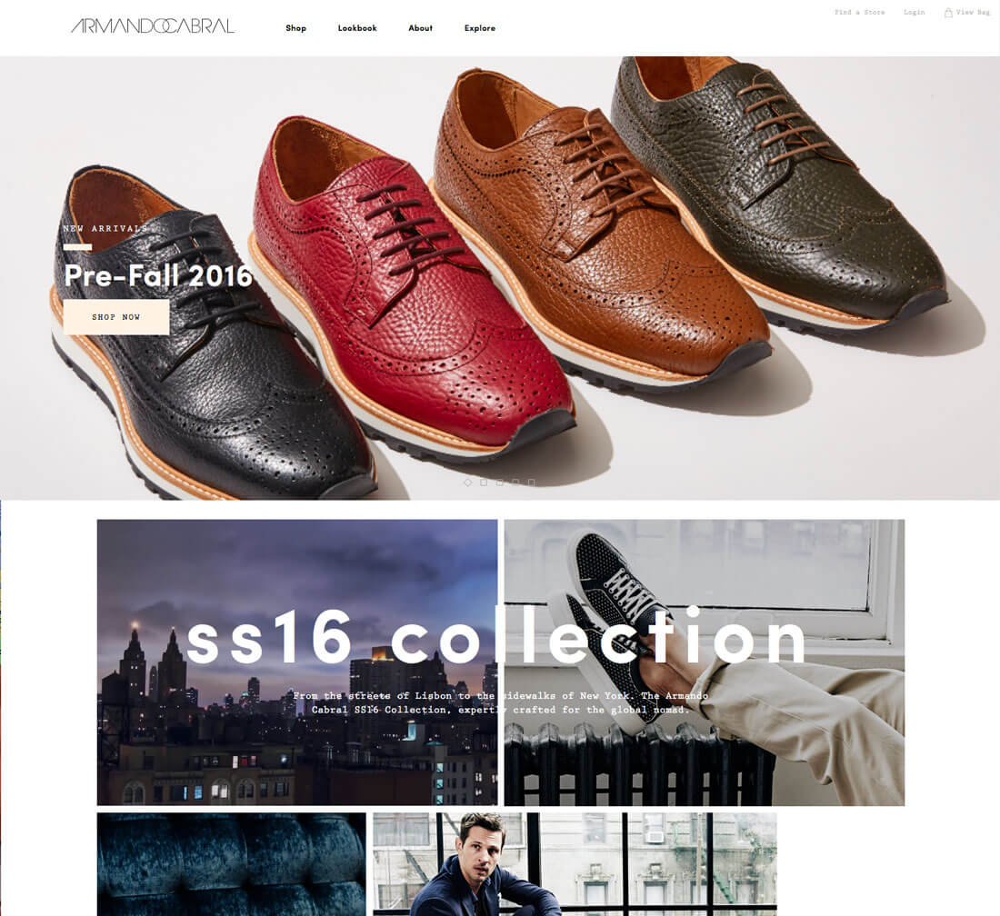

5 website layout ideas that never get old
There’s always that moment at the beginning of a website design project where you think “where do I start?” You’ll battle the desire to create something totally different and new versus something tested and reliable.
Realistically, there are a few layouts that just never get old. These patterns are generally accepted by users, easy to understand and provide a solid framework for pretty much any design and content type. Here, we’ll look at these five “timeless” website layouts and how to make the most of them for your next project.
1.Hero Image Stacked on Simple Grid
No matter the screen size, this format gives the user something to look at, scroll through and digest. While the actual specifications for this shape might changes based on device type or whether you prefer a full-width or shallow image, the sketch is roughly the same.
- Navigation
- Hero image with text overlay
- 2 to 4 columns with small information elements with or without icons
- Main body area
- Footer